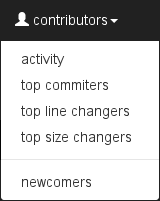

Gitcharts is an analytic online service for git repositories.
It helps you to find anomalies in a git repository using interactive graphs. Only public GitHub repositories are supported (at the moment).
Repositories are updated twice a day.
In the second graph, numbers of added and deleted lines by days in August 2015 show.
Top commits by a sum of changed lines in August 2015 appears in the third graph.
View a commit detail
Click on the second green bar in the third graph. Commit detail pops up.
Click on the icon. Full commit on GitHub opens in a new window.
If you have a clone of the git repository you can copy and paste git show 783d7e865ec command into a command line.
List of dashboards
In the top left menu, there are other dashboards which can be controlled the same way. Here is an expanded list of other dashboards.
In a few cases, there isn't any pop up window.

Boost small values
Check boost small values checkbox in the top right menu.
Uncheck boost small values checkbox.
Boost option applies logarithmic scale on y-axis so smaller values in the graph can be seen.
Find top contributors
You can find top commit contributors for the last few months
(or for the whole history):
Select contributors » activity dashboard in the top menu.
Check report till today box in the top right menu.
The activity
report now shows top committers for the last few months (from August 2015
till a current month, i.e. February 2016). By clicking on other months
in the first graph, you can easily see differences during the time.
Top committers the graph shows a correlation between the number of all commits (bigger bubble means more commits),
line additions (x-axis), line removals (y-axis) and total changed size (red to
green color spectrum).